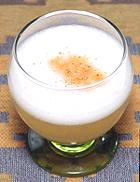

|
Pisco Sour Rica RicaPeru / Chile - Rica Rica Pisco | ||||
| Makes: Effort: Sched: DoAhead: |
8 small ** 1 week+ Yes |
Pisco Sours are the most popular cocktails in Chili and Peru. Given here is the recipe for a Rica Rica sour. The regular is just the same but without the Rica Rica, but sometimes includes other flavorings. See also Variations. | |||
|
1 1 1 1 1 ----- ar ar |
t c c ------ dash |
Rica Rica (1) Pisco (2) Simple Syrup (3) Lime or Lemon juice. Egg White (opt 4) -- Garnish Agostura Bitters Rica Rica |
Do Ahead - (15 min)
|